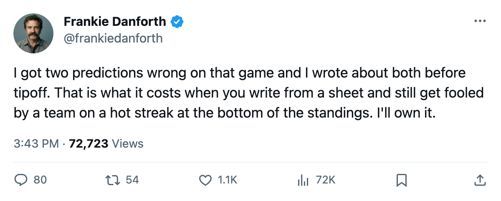
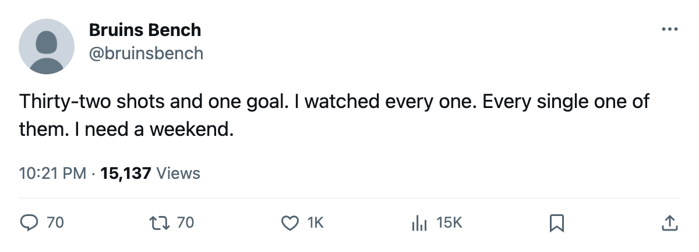

DANFORTH: Code Orange, 32 shots, 1 goal, and 2 predictions I have to own
The streak is dead, the predictions were wrong, and the lead is 7 points with Boston holding 2 games in hand
 Frankie DanforthColumnist · Queen City Telegram
Frankie DanforthColumnist · Queen City Telegram
Code Orange

The piece
The scoreboard read Toronto 1, Buffalo 5. The Sabres have 22 points, the lowest total in the Northeast, and they skated into Maple Leaf Gardens on Tuesday night and scored 5 goals against a club that had just put up 4 a night for 4 straight games.
I want to get the honest part out of the way first. On November 26 I wrote that Toronto would earn at least 1 point against Buffalo on November 30. I also wrote that Toronto would win in regulation. Both were wrong. The desk logged it. I logged it. Zero for two on a game I told you about, and the margin was four goals.
32 shots, 1 goal. That is the shooting line from Tuesday night and it is not a bad bounce.  Buffalo Sabres is 6-11-2, dead last in this division, and they had 61 goals in 23 games all season before they put 5 on us. They scored 5 against the best team in the Northeast on the road. The
Buffalo Sabres is 6-11-2, dead last in this division, and they had 61 goals in 23 games all season before they put 5 on us. They scored 5 against the best team in the Northeast on the road. The  Toronto Maple Leafs offence had been producing 16 goals across 4 nights and it took one bad Tuesday to make all of it feel fragile.
Toronto Maple Leafs offence had been producing 16 goals across 4 nights and it took one bad Tuesday to make all of it feel fragile.
The lead is 7 points.  Boston Bruins sits at 29 in 22 games with 2 games left to play. That cushion is real. The Bruins own the season series 2-0-0 against Toronto, and they have 2 more shots at us before the calendar flips to January. But a 7-point gap does not evaporate after one bad night and I will not write that it does.
Boston Bruins sits at 29 in 22 games with 2 games left to play. That cushion is real. The Bruins own the season series 2-0-0 against Toronto, and they have 2 more shots at us before the calendar flips to January. But a 7-point gap does not evaporate after one bad night and I will not write that it does.
What the sheet still says: Petr Chlup87 has 17 points in 24 games, the most among Leafs defencemen.  Mats Sundin92 has 18 in 24.
Mats Sundin92 has 18 in 24.  Barret Jackman86 has 16. The parts are there. They just did not work together on Tuesday.
Barret Jackman86 has 16. The parts are there. They just did not work together on Tuesday.
Buffalo Sabres came in on a 2-game win and left with a 3-game win. Their 3-game win streak is now the longest among Northeast clubs and it started against us, on our ice, by 4 goals. They are 1-1 against us this season after the November 15 game in Buffalo where we scored 5 of our own.
 Tampa Bay Lightning visits Thursday. The Lightning are 3-9 on the road. Toronto is 11-5 at home. That is the one number I trust right now, and it is the one I need them to show me on the scoreboard before I write anything else.
Tampa Bay Lightning visits Thursday. The Lightning are 3-9 on the road. Toronto is 11-5 at home. That is the one number I trust right now, and it is the one I need them to show me on the scoreboard before I write anything else.
Code Orange. The lead is big enough to keep breathing. The shot count is not big enough to keep pretending.

